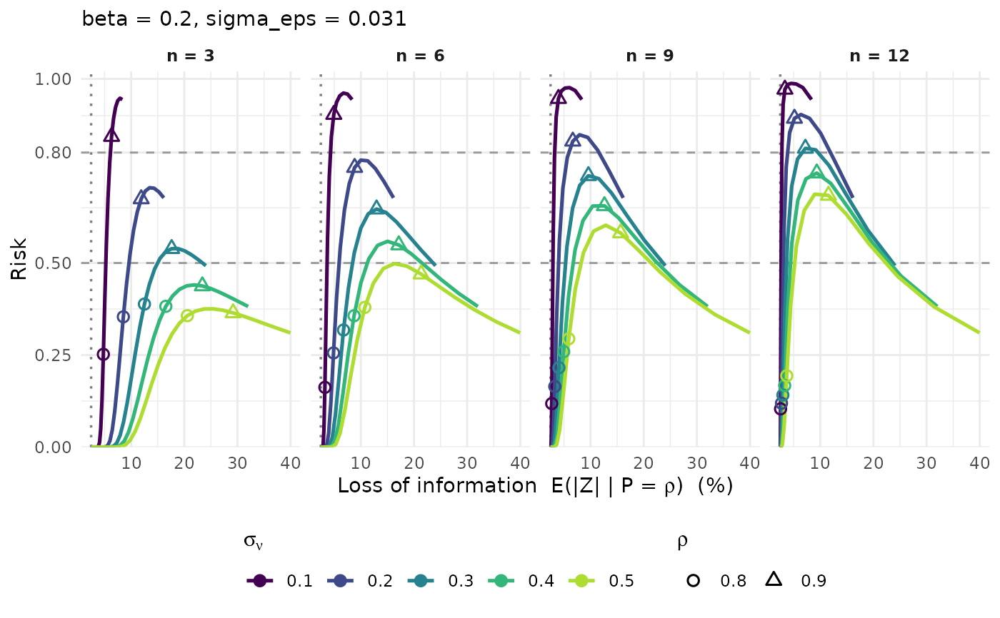

Reproduces Figure 4 of the paper: for each (sigma_nu, n) the curve traces
the (information loss, risk) couple as rho runs over ]0;1]. Loss on the
x-axis, risk on the y-axis, colour by sigma_nu, panels by n, and open
symbols marking a few reference dominance levels.
Arguments
- x
A calibration table (e.g. from
pm_calib_dominance()).- loss
Loss metric on the x-axis:
"EZ"(mean absolute loss, default) or"CI"(upper confidence bound).- sigma_nu, n, beta, sigma_eps, scenario
Optional values to keep.
- rho_marks
Dominance levels highlighted with a symbol.
- thresholds
Risk levels drawn as dashed horizontal lines.
Details
Generalised on the choice of the risk metric only: pick the scenario with
scenario when the table carries several, since a single risk column can be
plotted at a time.
Examples
grid <- pm_calib_dominance(sigma_eps = 0.031, beta = 0.2)
pm_plot_tradeoff(grid)
